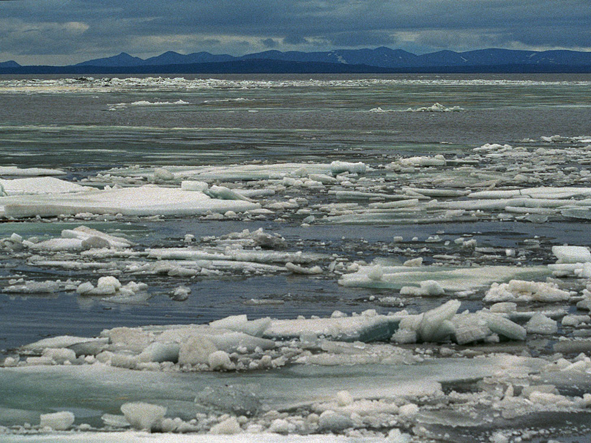
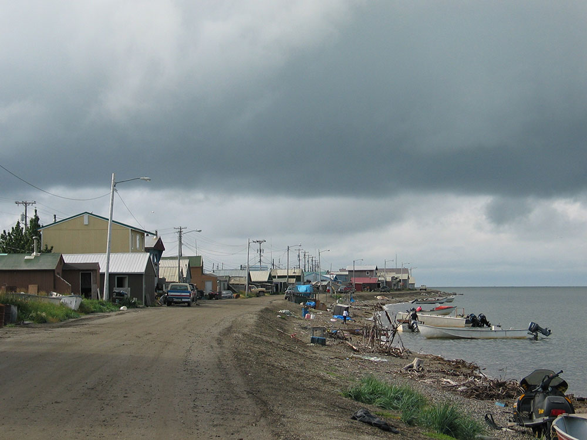

City 33 miles (53 km) north of the Arctic Circle on Alaska's western coast is a gateway to Kobuk Valley National Park and other natural attractions
General Information
How to Get There
From Anchorage, AK (~550 mi by air): No road connection exists; fly Alaska Airlines from Ted Stevens Anchorage International Airport directly to Ralph Wien Memorial Airport (OTZ) in Kotzebue in approximately 2 hours.
Overview
Kotzebue is a remote Iñupiat city on a spit of land at the end of the Baldwin Peninsula, in Kotzebue Sound, about 26 miles north of the Arctic Circle, and it is the hub of Northwest Alaska. It is accessible only by air and sea, and it is the gateway to Kobuk Valley National Park, Noatak National Preserve, and Cape Krusenstern National Monument. The town has about 3,000 residents, a strong Iñupiat identity, and a mix of traditional subsistence life and modern services.
Visitors come to Kotzebue for the Northwest Arctic Heritage Center, for flightseeing to the Great Kobuk Sand Dunes in Kobuk Valley National Park, and for the Fourth of July Nullagvik events. They also come for the midnight sun, for the caribou migration, and for the Iñupiat dancing, crafts, and food.
History
The Iñupiat have lived at Qikiqtagruk, "almost an island," for at least 600 years, and it was a major trading center, hosting an annual trade fair that drew people from Siberia and Interior Alaska. The Russian explorer Otto von Kotzebue sailed into the sound in 1816 and gave it his name. Whalers, traders, and missionaries arrived in the nineteenth century, and the town became the regional center for the Iñupiat in the twentieth century. In 1971, the Alaska Native Claims Settlement Act led to the formation of NANA Regional Corporation, which owns the Red Dog zinc mine nearby, the largest zinc mine in the world.
Sightseeing and Popular Landmarks
The Northwest Arctic Heritage Center, run by the National Park Service, has exhibits on the national parks of the region and Iñupiat culture. The Kotzebue waterfront has a fleet of boats and fish camps, and the town's Front Street has historic buildings. The waters of Kotzebue Sound and the Chukchi Sea surround the town.
Culture and Museums
The Northwest Arctic Heritage Center shows Iñupiat culture and local ecology. The Fourth of July is celebrated with Iñupiat games, such as the blanket toss, and the annual Kotzebue Sound Rodeo and sled dog races are held in the area. The town is also known for its Iñupiat ivory carving, skin sewing, and seal oil.
Parks
The Kobuk Valley National Park, to the east, has the Great Kobuk Sand Dunes and the caribou migration, and the Noatak National Preserve is one of the largest undisturbed river systems in the world. Cape Krusenstern National Monument, just north of town, has beach ridges that record 5,000 years of human history, and Gates of the Arctic National Park is farther east. Access to these parks is by air taxi or boat.
Seasons and Weather
Kotzebue has a subarctic climate. Summers are cool, with highs in the 50s and 60s°F and nearly continuous daylight, and winters are very cold, with highs in the single digits and teens and about 50 inches of snow. The sun does not set from about May 20 to July 22, and the best time to visit is June to August.
Things to Do
Visit the Gateway to Alaska's Western Arctic
Kotzebue is located on a narrow gravel spit extending into Kotzebue Sound, approximately 26 miles north of the Arctic Circle. The community serves as the transportation and cultural hub of Northwest Alaska and is one of the primary gateways to some of the most remote and spectacular public lands in the United States, including Kobuk Valley National Park, Noatak National Preserve, and Cape Krusenstern National Monument.
Explore the Northwest Arctic Heritage Center
Operated in partnership with the National Park Service, the Northwest Arctic Heritage Center serves as the primary visitor center for Alaska's Western Arctic national parklands. Exhibits focus on Iñupiat culture, Arctic wildlife, regional history, and the landscapes found throughout the surrounding national parks and preserves.
Learn About Iñupiat Culture
Approximately 80 percent of Kotzebue's residents are Iñupiat. Visitors can gain insight into Alaska Native traditions, subsistence lifestyles, local history, and contemporary Arctic culture through museums, cultural exhibits, artwork, and community events.
Browse Native Art at the Sulianich Art Center
The Sulianich Art Center showcases artwork and handcrafted items created by local Alaska Native artists. Visitors can browse carvings, jewelry, baskets, paintings, clothing, ivory artwork, and other traditional and contemporary pieces while supporting local artisans.
Take a Flightseeing Tour
Kotzebue is one of the best places in Alaska to begin an Arctic flightseeing adventure. Air taxi and charter operators offer flights over the Brooks Range, Kobuk Valley's sand dunes, Noatak National Preserve, Gates of the Arctic National Park and Preserve, Cape Krusenstern National Monument, and other remote wilderness destinations.
Visit Cape Krusenstern National Monument
Located west of Kotzebue along the Chukchi Sea, Cape Krusenstern National Monument contains more than 5,000 years of human history preserved within ancient beach ridges. Visitors experience archaeological sites, coastal landscapes, wildlife viewing opportunities, and insight into thousands of years of Arctic habitation.
Explore Noatak National Preserve
The Noatak National Preserve protects one of the largest intact river basins in North America. Accessed primarily by aircraft from Kotzebue, the preserve offers outstanding opportunities for backpacking, rafting, photography, wildlife viewing, and wilderness exploration.
Plan an Excursion to Kobuk Valley National Park
Many visitors use Kotzebue as a base for exploring Kobuk Valley National Park. The park is famous for the Great Kobuk Sand Dunes, caribou migrations, Arctic rivers, and unique landscapes that combine tundra, forests, mountains, and desert-like dunes.
Experience Arctic River Adventures
Kotzebue serves as a launch point for some of Alaska's most famous river expeditions. Popular routes include the Noatak, Kobuk, Selawik, and Salmon Rivers, which offer opportunities for rafting, fishing, camping, wildlife viewing, and wilderness travel.
Watch the Midnight Sun
During summer, the sun remains above the horizon for extended periods. Shore Avenue and the beaches along Kotzebue Sound provide excellent locations to observe the midnight sun and enjoy views across the Arctic coastline.
View the Northern Lights
From fall through spring, Kotzebue's northern latitude and dark skies create favorable conditions for viewing the aurora borealis. Colorful displays frequently illuminate the Arctic skies during periods of strong geomagnetic activity.
Top Trails and Outdoor Routes
Kotzebue Sound Shore Walk
Length: Approximately 1 to 3 miles depending on route
Elevation Gain: Minimal
Difficulty: Easy
Walking along the beaches and shoreline of Kotzebue Sound provides opportunities to observe local fishing activity, migratory birds, Arctic landscapes, and views across the Chukchi Sea. It is one of the easiest ways to experience the region's coastal environment.
Cape Krusenstern Backcountry Routes
Length: Varies by itinerary
Elevation Gain: Minimal
Difficulty: Moderate
There are no developed trails within Cape Krusenstern National Monument. Visitors create their own routes across ancient beach ridges, tundra, and coastal landscapes while exploring one of Alaska's most important archaeological regions.
Noatak River Corridor
Length: Multi-day wilderness route
Elevation Gain: Varies
Difficulty: Moderate to Strenuous
The Noatak River corridor is one of Alaska's premier wilderness destinations. Backpackers and rafters can explore vast Arctic landscapes while viewing wildlife and experiencing one of North America's largest protected river basins.
Kobuk River Route
Length: Multi-day wilderness route
Elevation Gain: Minimal while floating
Difficulty: Moderate
Starting from remote fly-in access points, the Kobuk River offers outstanding opportunities for river travel through wildlife habitat, tundra landscapes, and portions of Kobuk Valley National Park.
Serpentine Hot Springs Exploration Area
Length: Approximately 1 to 5 miles depending on route
Elevation Gain: Minimal to Moderate
Difficulty: Easy to Moderate
Located within Bering Land Bridge National Preserve, Serpentine Hot Springs is a popular fly-in destination from Kotzebue. Visitors can walk among dramatic granite tors, explore the surrounding tundra, and enjoy one of Alaska's most remote hot spring settings.
This article uses material from Wikipedia as well as information from official tourism and institutional sources. Key references include Kotzebue Visitors Center, National Park Service Northwest Alaska, NANA Regional Corporation, Travel Alaska, and National Weather Service Fairbanks. Wikipedia material is from the article "Kotzebue, Alaska", and is available under the Creative Commons Attribution-Share-Alike License 3.0.

.jpg){kind=link}
